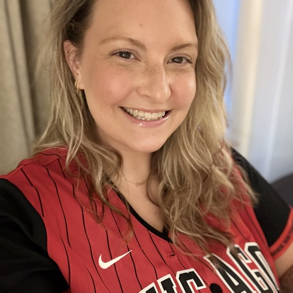
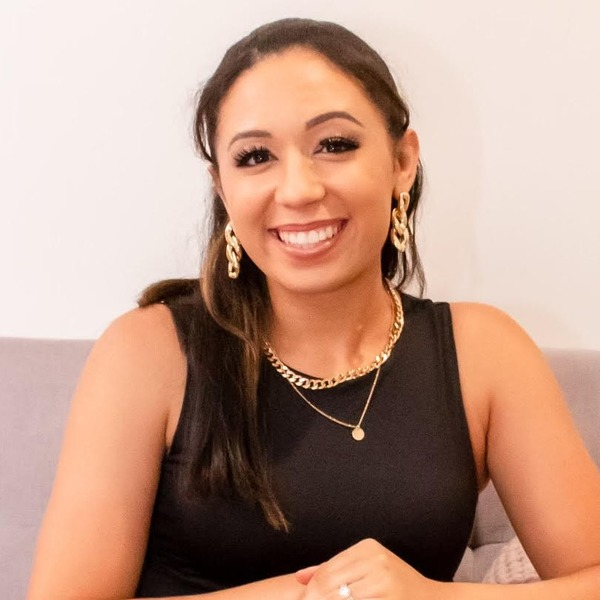
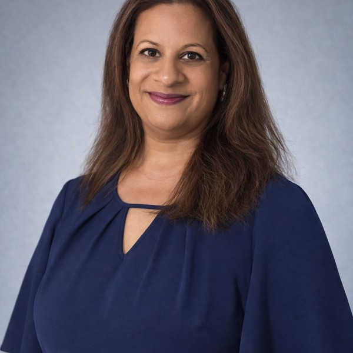
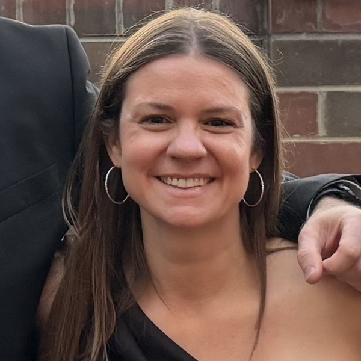

Not a Public Page
This file holds the canonical copy of every block that appears on more than one page. Edit a block here, then run python3 sync-shared.py to push it to every page that carries the matching markers. Do not edit those blocks on the pages themselves, because the script overwrites them.
The navigation above and the board roster below are the live blocks. They render with the real stylesheet, so this doubles as a preview.
Board Roster Block
-

President
Megan Byczek
ptopresidentep@gmail.comShow bio
Hi, I’m Megan Byczek, your EP PTO President!
Our family joined Eagle Pointe last year; and we have really enjoyed the community that we’ve become a part of. My oldest son, Anderson is in 1st grade, and my younger son, Archer is in Pre-K.
I joined the PTO last year, and became heavily involved quickly. After helping with several events I was able to join the board as the VP of Fundraising. I am passionate about giving back to the community; giving the Eagle Pointe students, teachers, staff, and families a fun and enriching year.
As President, my goal is to make sure the EP Community has a great experience, feels included, feels heard, seen, and of course have a GREAT and Exciting time throughout the year.
Outside of PTO, I am a mom, wife, daughter, and friend. I have a background in Early Childhood Education and Sociology, working with people that have physical and intellectual disabilities. I truly have a passion for helping others! I also enjoy sports, always cheering for Da Bears, Bulls, White Sox, and Blackhawks!!! I love going to concerts, reading, shopping, and traveling.
I am excited for a great year ahead, and look forward to having new and fun experiences with our Eagle Pointe families!
-

Vice President, Fundraising
Shelby Smith
ptovpfundraisingep@gmail.comShow bio
Hi Eagle Point families!
My name is Shelby Smith and I am the PTO Vice President of Fundraising excited to take on the role of PTO Vice President of Fundraising. I have three kiddos; my oldest Ava is in 6th grade at Heritage Grove, my middle child Taylen is in 1st grade, and my youngest Tyler is in Kindergarten!
My family joined the Eagle Pointe community two years ago and we were incredibly pleased with the warm welcome we received from students and staff. I wanted to play a role in the magic that makes our school so engaging! So here I am, fundraising to make that happen!
Outside of the PTO, I am a Licensed Marriage and Family Therapist and own a private practice. I hold degrees in Child Development and Family Studies and truly enjoy working with children, parents, and other support systems to reach common goals. My spare time consists of being a dance mom, driving my children everywhere, and now working with the community to get our school some extra support!
My goal as VP of fundraising is to bridge the gap between what the school is required to provide, and what our staff and families truly want in order to help our students thrive academically and socially. I look forward to serving EP in this role this year and I can’t wait for you to see what we have planned!
-
Vice President, Events
Jenny Hohlman
ptovpeventsep@gmail.comShow bio
Hi, I am Jenny, VP of Events! I am the proud momma of a (hopefully) sweet little Eagle Pointian 4th grader, Aria. I also have a wild-child little preschooler, Isla, who will one day be gracing the EP hallways with her, how can I put this… “leadership skills”.
I have a background in the creative arts, and love bringing fun to life! My goal is simple: create events that make our kids excited, our families feel connected, and maybe even make the grown-ups have a little fun too.
-

Treasurer
Alpa Magloire
ptotreasurerep@gmail.comShow bio
Hi Eagle Pointe families! I’m Alpa Magloire, proud mom to Shailen (freshman at North this fall) and Maxwell (3rd grade). After nine years at Eagle Pointe, I wanted to give back in a bigger way, which is why I’m excited to step into the Treasurer role.
I love being involved here and joined the PTO Board to help support the fun, meaningful experiences that make Eagle Pointe such a special place. I’m detail-oriented, organized, and passionate about making sure our PTO funds support great events and opportunities for our students, while also finding more ways to support our teachers and staff.
Outside of school, I’m an avid reader, a big Chicago Bears and Bulls fan, and I love spending time with family and friends. I’m looking forward to working together to keep our Eagle Pointe community strong and connected!
-

Secretary
Kim Prazak
ptosecretaryep@gmail.comShow bio
Hi, I’m Kim Prazak, PTO Secretary!
Our family has been part of the Eagle Pointe community for several years, and I love being involved in a school that has become such a big part of our lives. I have three kids — Aletta is in 4th grade, Donovan is in 1st, and my oldest, Declan, is at Heritage Grove for 6th grade.
I’ve been involved with the PTO for the past few years, helping with events, fundraisers, classroom parties, and wherever else an extra set of hands was needed. I decided to join the PTO Board because I truly enjoy bringing people together and helping make school a fun, welcoming place for our kids, families, and teachers.
As Secretary, one of my biggest goals is to keep our families in the know and connected. I want communication with the PTO to feel easy and open, and for every family to feel informed, included, and welcome to get involved — whether that means volunteering at every event or simply showing up when they can.
Outside of PTO, I’m the Assistant Director of Operations at Arrowhead Golf Club. Most of my free time is spent somewhere on a ball field, basketball court, or at a dance competition cheering on my kids. When I do find a little time for myself, I enjoy reading, listening to a crime podcast, going for a walk, coffee, working on something crafty, or enjoying a good spicy marg.
I’m excited for a fun year ahead and so happy to be along for the ride with our Eagle Pointe families!